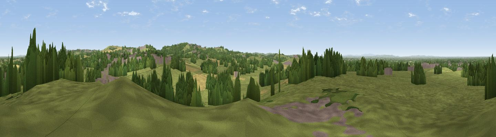

Viewpoint near Audley
#17360 in England · top 23% of its area beats it · near Audley · access?Where it is
The exact computed spot (SJ 80410 48525). Click the marker for map links.
Public access: no public right of way or access land is recorded at this exact spot — it may be on private land. Computed from Natural England's CRoW access layer and OpenStreetMap rights of way — not the legal definitive map. Always verify locally.
The view, rendered

A 360° render of this exact spot computed from the terrain model, tree cover and land cover — summer colours, afternoon light, calibrated against photographs of famous viewpoints. Real trees, hedges and buildings will differ in detail.
The panorama
Grey silhouette: terrain skyline in each direction (720 bearings, Earth curvature and refraction included). Dashed green: skyline with trees (+15 m) and buildings (+8 m) as obstacles. Blue strip: how far the ground is visible on each bearing.
Where the view opens
Wedge length = distance to the farthest visible ground on that bearing (vegetation-aware). Rings at 10, 25 and 50 km.
What fills the view
61% grassland · 28% woodland · 6% cropland · 5% built-up
Angular shares of the visible panorama (visual magnitude), not map area. Landscape diversity 0.43 (0–1 Shannon).
Key numbers
More beautiful places nearby
The staircase of upgrades: each row has a higher view potential than everything closer. Driving times are estimates from straight-line distance, calibrated against real road routing — check an actual route before setting out.
| Place | Direction | Drive | Score |
|---|---|---|---|
| Viewpoint near Madeley Heath | SSW · 1 km | ~3 min | 65.4 |
| Bignall Hill | NNE · 3 km | ~8 min | 75.2 |
| Viewpoint near Mow Cop | NNE · 10 km | ~20 min | 80.2 |
| Viewpoint near Harthill | WNW · 30 km | ~47 min | 80.5 |
| Viewpoint near Little Wenlock | SSW · 43 km | ~63 min | 84.2 |
| The Wrekin | SSW · 44 km | ~64 min | 85.0 |
| Viewpoint near Little Wenlock | SSW · 44 km | ~64 min | 86.6 |
| North Hill | S · 102 km | ~127 min | 86.8 |
53.03364, -2.29357 · source: osm viewpoint · position refined by local search. Computed location — check access rights before visiting.